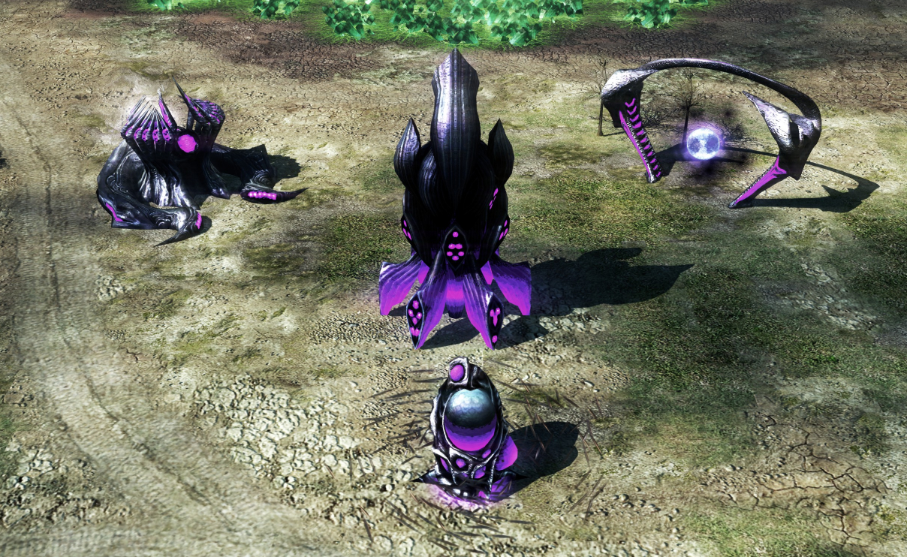
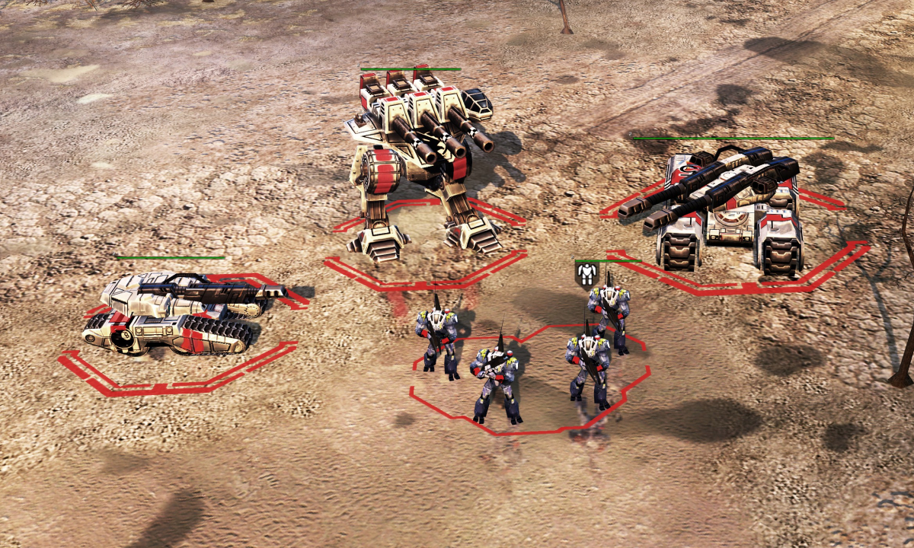
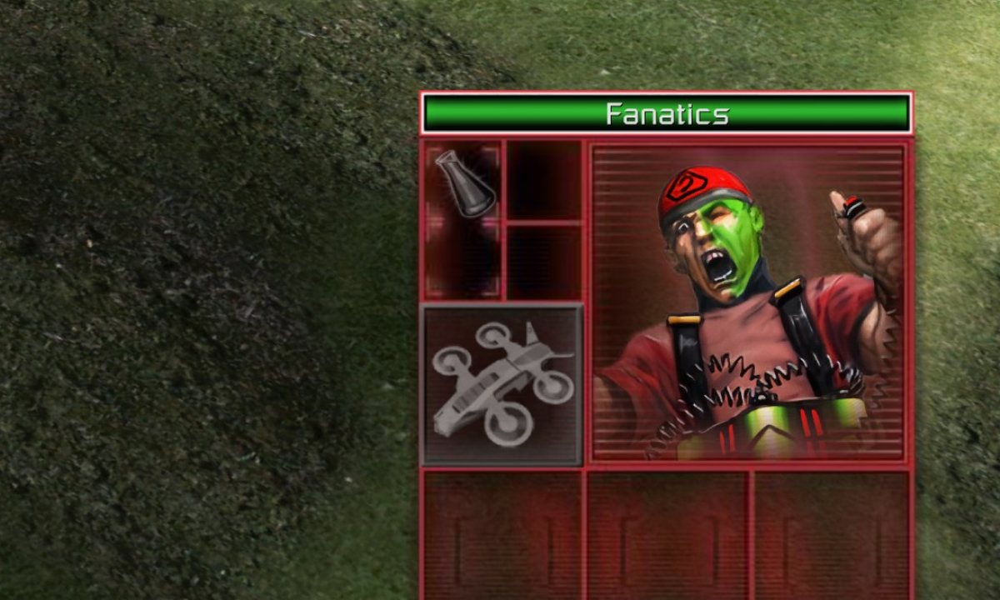
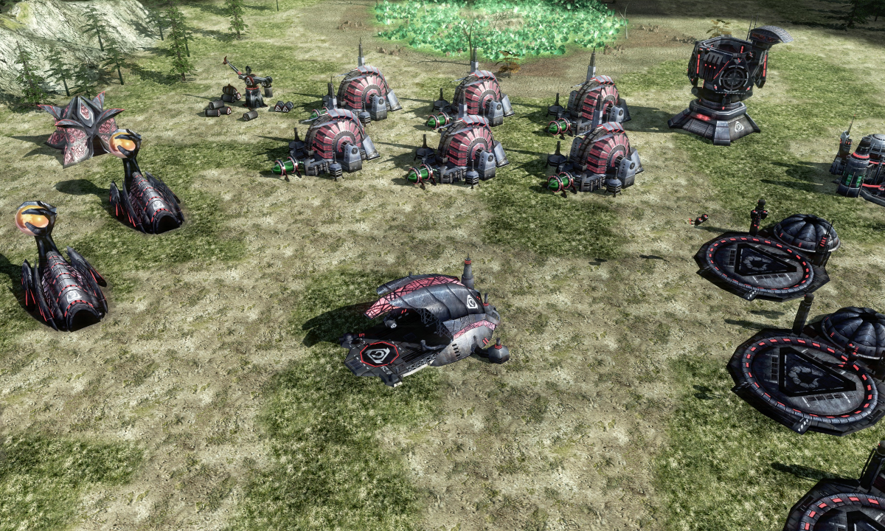
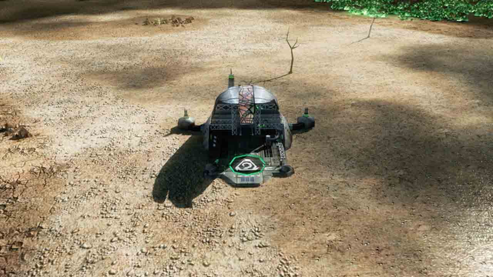
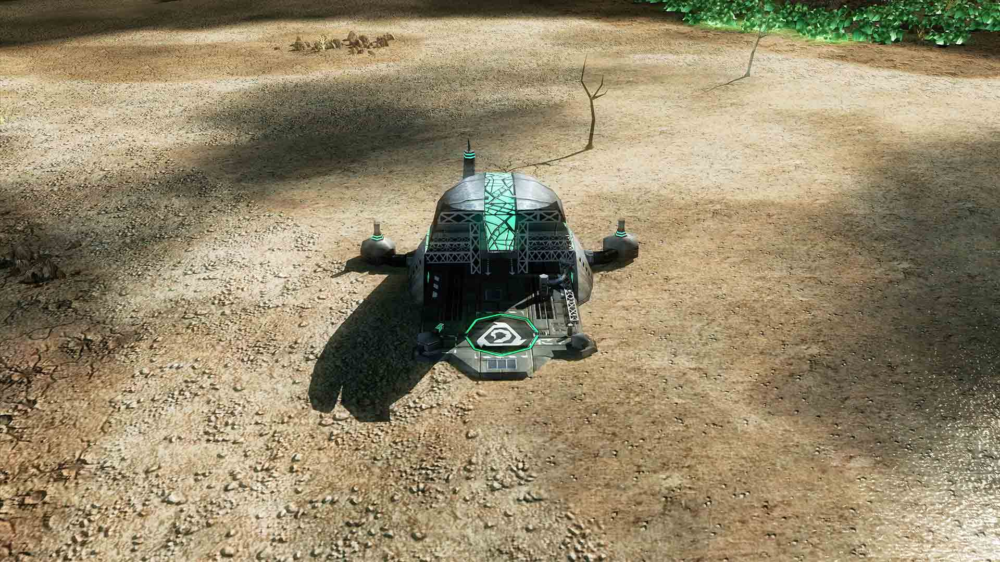

OVER 1450+ REMASTERED IMAGES
Using neural networks we were able to re-create the game you love and bring it to modern standards, with over 1450+ textures completed so far, this mod takes your Kane's Wrath experience to a new level.

CUSTOM UNIT SKINS
Custom skins such as the Kane Edition skins, and unique Zone Troopers, mulit-coloured lasers and much more are available using this texture pack.

ENHANCED UI AND UNIT PORTRAITS
The user interface, including all unit portraits has been remastered and modifications have been made to make the units clearer and more desireable.

FIXES OF NVIDIA AND AMD GPUS

STANDARD GAME
4K TEXTURE PACK


Greater dynamic range, more colour and sharper textures.
DONATE
The process of upscaling requires use of a tool called letsenhance.io, using this tool we have upscaled many of the game’s assets, but it is not a free tool, it requires donations. Therefore, we ask that to continue the great work here, that you donate towards the GoFundMe page, with this you can also gain access to custom skins and graphics.
DOWNLOADS
To use this mod, it’s recommended you have a GPU with at least 4GB of video memory or VRAM to run this mod smoothly at 4K resolution.